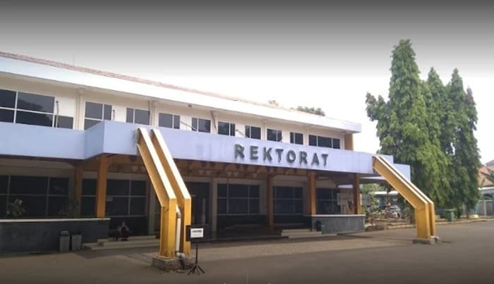

Institut Sains dan Teknologi Nasional
Membangun Masa Depan Melalui Inovasi dan Kecerdasan Digital
ISTN adalah perguruan tinggi swasta yang berfokus pada pengembangan sains dan teknologi untuk mendukung kemajuan bangsa.
Daftar Sekarang

Program Studi
Berita & Sorotan
Kolaborasi Strategis
ISTN Kampus Kolaborasi: ISTN x Industri
Alumni Kami
Ikuti Kami di Media Sosial
ISTN Radio
Dengarkan Podcast Kami
Ikuti diskusi menarik tentang teknologi, inovasi, dan pendidikan bersama pakar dari ISTN dan industri.
Tonton Episode TerbaruTentang Kami
Visi
Menjadi institusi pendidikan tinggi terkemuka yang menghasilkan lulusan berkualitas, inovatif, dan berdaya saing global di bidang sains dan teknologi.
Misi
Kampus Kami
Map Placeholder
Jl. RS. Fatmawati Raya No. 75, Cilandak, Jakarta Selatan, DKI Jakarta 12450
+62 21 7590 8858
info@istn.ac.id
Kalender Akademik
Jangan lewatkan tanggal penting untuk tahun akademik ini. Unduh kalender akademik lengkap untuk informasi lebih lanjut.
Unduh Kalender